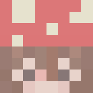

 made by culorfuj
MVP+ Rank
This Rank automatically turns on the quests whenever you join a lobby. You can get the rank by someone gifting the rank to you or buying it at the
Hypixel Server Store.
Notifly.zone by Notifly
A website that allows you to check quests. It has cool features like the questing leaderboards.
The Questing Mod by Notifly
A Minecraft Forge Mod that track quests when you are on the Hypixel Server.
Questify by Gloryness
Questing Bot for your Discord server.
Play Command Discord Bot by Gloryness
A Discord Bot that has play commands on Hypixel.
Game Pings Discord Server
This Discord server has a bot that pings every time when Warlords Domination and Warlords Team Deathmatch are queuing.
It also pings other games like Arena Duels, Dragon Wars, Mega Skywars, Megawalls Faceoff, and Speed UHC when it is queueing.
Hytrack
A website that shows the player count for games. This is great for seeing the player count for games.
Questing Community Discord Server
The Questing Community Discord Server